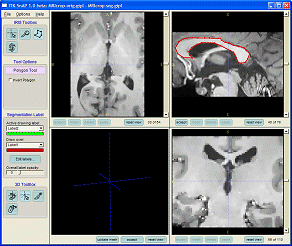

Section 1. Introduction.
This section explains the purpose of the SNAP tool, and describes the screen layout. This section is organized as a series of questions and answers about the general capabilities and structure of the SNAP tool. For brevity, only the most basic questions are answered here; more questions will be answered in later sections of the tutorial.
How is This Tutorial Organized?
This tutorial is a walk-through of a SNAP segmentation session. The information presented in this tutorial falls into the following categories:
- General information.
This is information about SNAP that is necessary in order to use the tool. Most of the text in the tutorial falls into this category.
- Action items (denoted by icon
 ).
).
These are actions that the user should perform in the course of the tutorial, such as clicking on buttons and entering text.
- Tips and tricks (denoted by icon
 ).
).
This is extra information that can increase your productivity when using the tool but is not essential.
- Information for experts (denoted by icon ).
This is additional, often mathematical information for advanced users.
How Do I Get and Run SNAP Under Microsoft Windows™?
On the Microsoft Windows™ platform, SNAP is distributed as a standalone program. It can be easily installed like any other program, and launched from the Microsoft Windows™ Start menu.
The SNAP self-installer is available for download at http://www.itksnap.org/download/snap
How Do I Get and Run SNAP as Part of ITK?
On all supported platforms, SNAP is distributed as a part if the Insight Toolkit InsightApplications directory. Obtaining, building and running SNAP as part of this distribution requires considerable knowledge of system administration and computer programming.
The directions on obtaining and installing SNAP are available at http://www.itksnap.org/download/snap
If SNAP has been installed on your system, consult your system administrator for instructions on starting it.
What Exactly Does SNAP Do?
SNAP provides a set of tools to make segmentation of volumetric data easier and faster. SNAP can be used in two different modes: manual segmetnation and semi-automatic segmentation. The manual mode is used for segmentation using hand contouring and for cleaning up the results of automatic segmentation. In the semi-automatic mode, a powerful level set segmentation algorithm is used to segment anatomical structures in three dimensions. This algorithm requires some guidance from the user, and SNAP provides an easy interface to provide such guidance.
What Kinds of Users is SNAP Designed for?
First and foremost, SNAP was designed for clinical users. A user who already uses a computer for image segmentation, and thus understands the fundamentals of three-dimensional medical imaging will be able to use SNAP after completing this tutorial. SNAP does not require a deep understanding of the underlying mathematics and computer science to use.
SNAP user interface also provides some controls designed specifically for expert users, who are familiar with the level set algorithms. In this tutorial, some sections are written for the expert users, and are optional.
What Kinds of Images Can SNAP Process?
SNAP can be used to segment a variety of three-dimensional images. The images have to be homogeneous, i.e., having a single intensity value per pixel. In other words, SNAP can be used with MRI, CT and PET images, but not with color cryosection or diffusion tensor images. SNAP reads a variety of image formats, including RAW, Analyze, GIPL and MetaImage.
How Does SNAP Represent Segmentation Results?
SNAP represents segmentation by assigning labels to pixels (voxels) in the input image. For instance, when segmenting a brain MRI, some of the pixels in the image may be assigned the label 'grey matter', others will be assigned the label 'lateral vetricle', etc. It is up to the user to come up with the list of labels to use in a particular segmentation task. Each voxel in the input image can only be assigned a single label. The output of SNAP is a volumetric image of labels.
In this tutorial, we will use the term grey image to refer to the three-dimensional input image, e.g., an MRI or a CT image. We will use the term label image to refer to the corresponding three-dimensional volume of labels.
What Are the Main Limitations of SNAP?
Since SNAP can only assign a single label to each pixel in the grey image, it can not be used for segmentation with sub-voxel accuracy.
What Are the Different Parts of the SNAP User Interface?
The picture below shows the SNAP user interface in manual segmentation mode.

Most of the SNAP window is occupied by four panels, three of which show orthogonal slices through an image, and the fourth, located at bottom left, shows the three-dimensional view of the segmentation. This tutorial will refer to these panels as slice panels and the 3D panel. Under each of these panels are located several blue buttons, which are used to interact with each panel individually.
The left portion of the SNAP window is occupied by a tall thin area called the control panel. At the top of the control panel is located a menu bar, which is used for saving and loading images, for setting options, and for accessing the help system. The rest of the control panel houses a variety of buttons, sliders and other controls, which appear and disappear depending on the current mode of operation. We will see how to use the control panel in the subsequent sections.
In addition to the main window shown above, several other windows will pop-up during the SNAP session. These windows are used to coordinate specific tasks, such as loading and saving images, or selecting parameters in the semi-automatic segmentation mode.
What Input Devices does SNAP Require?
SNAP requires the use of a mouse, trackball, or an equivalent input device. A three-button mouse with a scroll wheel is preferred, but is not necessary. If your input device does not have a right or a middle mouse button, use the following combinations keyboard mouse combinations:
- Right Click: hold the Alt key and click the left mouse button.
- Middle Click: hold the Ctrl key and click either the left or the right mouse button.
What Additional Documentation is Available?
See the list of publications at http://itksnap.org/manual.php